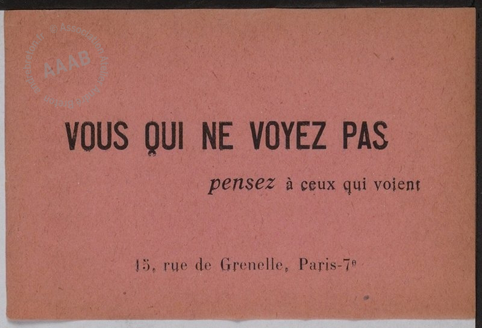
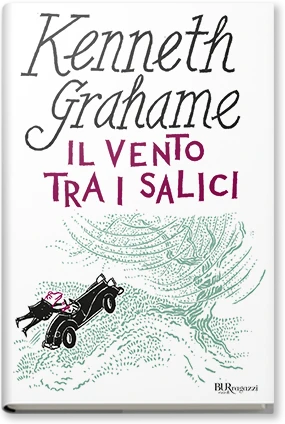
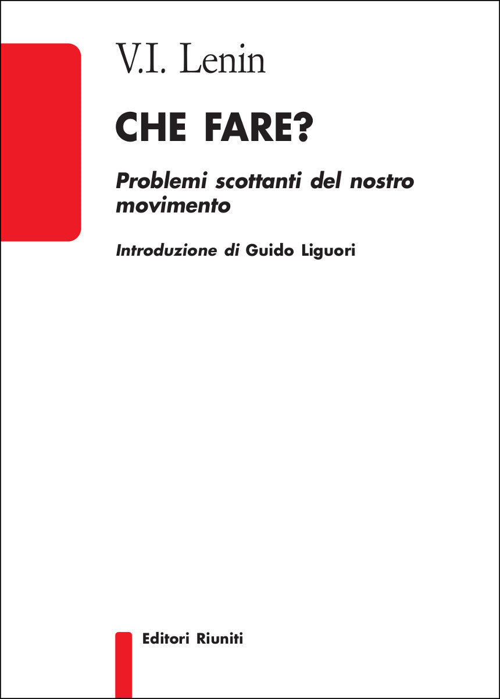

44:40 · 7 OPERE
Ha senso provare a comunicare con un'epoca che ha perso la parola?
Il filo del discorso
La perdita della parola è intesa da Dr Divago come perdita di un terreno condiviso sul quale confrontare fatti, idee e giudizi. Il motto del Bureau de recherches surréalistes apre una riflessione che attraversa storia, arte e comunicazione: non basta moltiplicare messaggi per rendere possibile un discorso. Il relatore critica il prestigio usato al posto delle argomentazioni, richiamando Orwell e la fiaba dell’imperatore nudo. Nella sua lettura della modernità, lo svuotamento dei concetti riguarda anche diritto, appartenenze politiche e valore della lingua italiana. Una parte centrale propone tre direzioni per la scuola: maggiore autonomia, revisione dei libri di testo e ripensamento del rapporto fra docente e discente. La domanda sul senso di continuare a parlare trova una risposta nel dovere civile di custodire e discutere il sapere, anche quando l’efficacia sembra limitata. La chiusa riprende i rischi della manipolazione e torna al motto iniziale. Le valutazioni politiche e le analogie storiche restano del relatore; le note distinguono tali posizioni dalla verifica di citazioni, norme e organismi internazionali.
I libri nel discorso

Vous qui ne voyez pas, pensez à ceux qui voient
Foglietto originale del 1924: Papillon del Bureau de recherches surréalistes, Parigi, dicembre 1924; riproduzione dell’esemplare su carta rosa dell’archivio Atelier André Breton.
Fotografia integrale del foglietto su carta rosa con la frase esatta, selezionata dopo il confronto visivo dei cinque esemplari della scheda. Conservata la filigrana AAAB. Non è una copertina libraria, non è il foglietto con la citazione di Hegel e non viene identificata con il diverso esemplare catalogato dal Metropolitan Museum. Il museo ha risposto HTTP 429: nessun ulteriore tentativo sul suo server.
Bureau de recherches surréalistes, 1924 e motto francese ripetuto alla fine.
Passaggio 0:01 ↗ · Fonti e libro ↗
Don Chisciotte della Mancia
Identificazione probabile
Copertina: Newton Compton · Vintage · edizione di riferimento
Cervantes e il primo grande romanzo europeo: rinvio contestuale probabile, titolo non pronunciato.
Passaggio 3:35 ↗ · Fonti e libro ↗
Dichiarazione d’indipendenza degli Stati Uniti d’America
Identificazione probabile
Facsimile: incisione di Stone del 1823: Documento del 4 luglio 1776 · incisione di William J. Stone del 1823
Riproduzione documentaria dell’incisione di Stone del 1823 conservata dai National Archives. Non è la pergamena originale del 1776, né la copertina di un libro.
Vita, libertà e ricerca della felicità; più avanti Jefferson e le verità di per sé evidenti, titolo del documento non pronunciato.
Passaggio 14:00 ↗ · Fonti e libro ↗
Il vento tra i salici (The Wind in the Willows)
Copertina: Rizzoli, BUR Ragazzi, 2013, edizione cartacea ISBN 9788817068154; distinto dall’eBook ISBN 9788858658703.
Immagine autentica dell’opera, controllata visivamente; l’edizione di riferimento non è attribuita al filmato.
The Wind in the Willows e Il vento tra i salici, titoli riconoscibili.
Passaggio 25:32 ↗ · Fonti e libro ↗
In Front of Your Nose
Identificazione probabile
Copertina: David R. Godine, Nonpareil · Collected Essays, Journalism and Letters, vol. 4
Copertina della raccolta In Front of Your Nose, 1945–1950, quarto volume dei Collected Essays, Journalism and Letters, curato da Sonia Orwell e Ian Angus. Il saggio omonimo è incluso a pagina 122: l’immagine rappresenta la raccolta, non una pubblicazione autonoma del saggio. Nessuna edizione attribuita al video.
Orwell e la difficoltà di vedere ciò che è sotto gli occhi; identificazione dal passo, titolo non pronunciato.
Passaggio 25:56 ↗ · Fonti e libro ↗
I vestiti nuovi dell’imperatore
Copertina: Rizzoli, 2014 · eBook di riferimento
Andersen e I vestiti nuovi dell’imperatore, fiaba esplicitamente nominata.
Passaggio 27:30 ↗ · Fonti e libro ↗
Che fare? Problemi scottanti del nostro movimento
Identificazione probabile
Copertina: Editori Riuniti, 2019, introduzione di Guido Liguori, 224 pagine; ISBN 9788835981336.
Immagine autentica dell’opera, controllata visivamente; l’edizione di riferimento non è attribuita al filmato.
Che fare? collegato a Lenin; titolo della specifica pubblicazione ed edizione non mostrati.
Passaggio 29:48 ↗ · Fonti e libro ↗